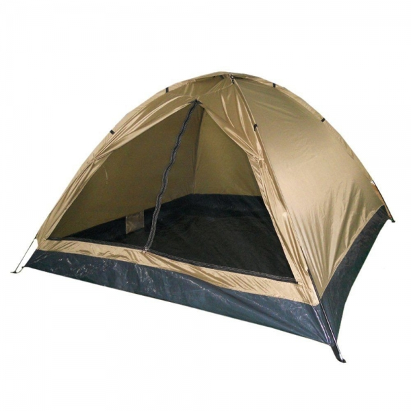
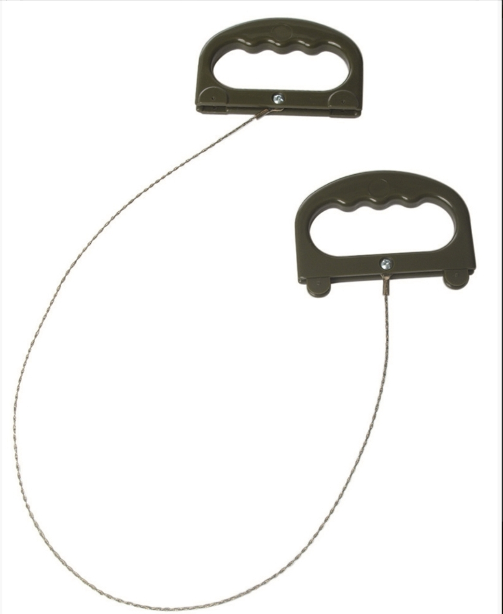
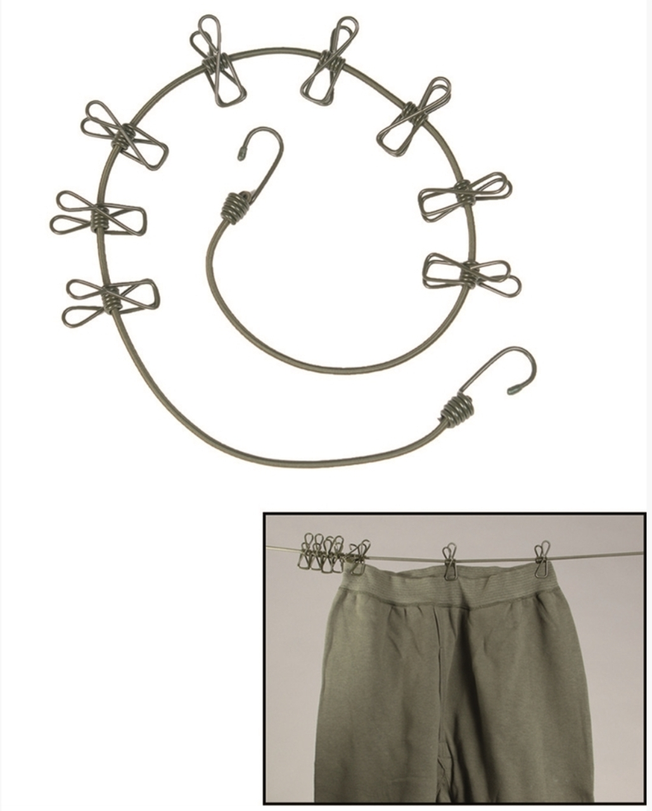
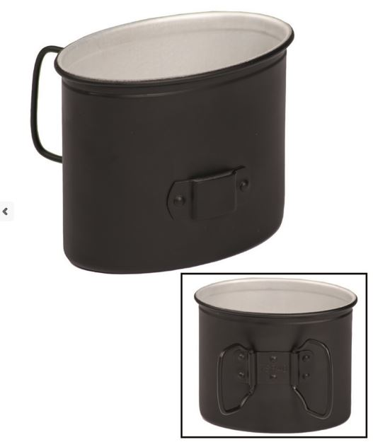
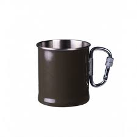
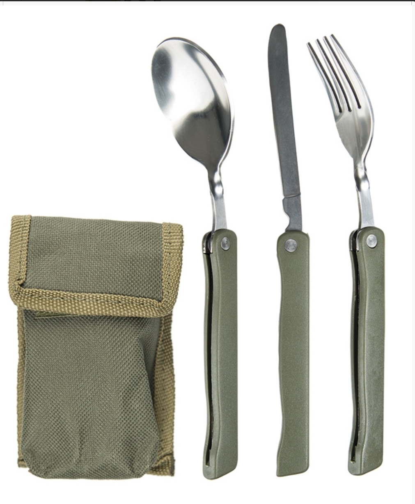
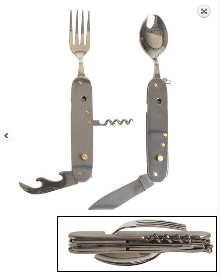

Cort Iglu Standard Coyote
200 Lei
Cod produs: CR001
Descriere Produs:
Material: 100% poliester, poliuretan
acoperit foaie de sol: 100% polietilena
Frame: fibra de sticla
sac de transport: 100% poliester
Numărul de persoane: 3
Dimensiuni: 210 x 210 x 130 cm
Marimea ambalajului: 63 x 16 cm
Greutate: 2500 g

Mil-Tec Wire Saw With Gripper
35 Lei
Cod produs: CR002
Descriere Produs:
100% Stainless Steel
Handles: 100% Polypropylene
Total length with handles: 71 cm
Length saw: 60 cm
Weight: 50 g
- commando wire saw with PP handles
- eightfold wounded steel wire
- ideal for wood, plastic, bones and soft metal

Clothesline with Clothespins
30 Lei
Cod produs: CR003
Descriere Produs:
Clothesline: 100% Polypropylene
Pegs: 100% Steel
Length: 110 cm
- with 8 clothes pegs

OD Mini Hammock with Transport Bag
85 Lei
Cod produs: CR004
Descriere Produs:
100% Nylon
Transportation sack: 100% Polyester
Weight: 250 g
Maximum weight capacity: 120 kg

OD Scaun Relaxare
? Lei
Cod produs: CR005
Descriere Produs:
100% Polyester (Oxford)
Frame: Steel
Transportation bag: 100% Polyester (Oxford)
Dimensions: 90 x 52 x 82 cm
Pack size: 89 x 13 x 12 cm
Weight: 2600 g
Load-bearing capacity: max.100 kg
- armrest with beverage holder
- delivery with transportation bag

Cana Metalica Ovala
40 Lei
Cod produs: CR006
Descriere Produs:
100% Aluminum,
Dimensions: 10,5 x 6 x 8,5 cm,
Weight: 52 g,
* armata germana - al II-lea razboi mondial (reproducere)

Cana metalica oliv cu maner carabina
35 Lei
Cod produs: CR007
Descriere Produs:
Cana metalica oliv cu maner carabina,
Volum 250ml

Tacamuri Pliabile
42 Lei
Cod produs: CR008
Descriere Produs:
Stainless Steel
Handles: ABS plastic
Pouch: 100% Polyester
Weight (total): 155 g
Cutlery: 133 g
Length of cutlery: ca. 20 cm

Cana Rezistenta
? Lei
Cod produs: CR009
Descriere Produs:
Stainless Steel
Capacity: 300 ml
Height: 9 cm
Diameter bottom: 7,5 cm
Weight: 120 g
- unbreakable
- mat od (perfect for outdoors)

Briceag + Tacamuri de buzunar
30 Lei
Cod produs: CR009
Descriere Produs:
-Cutit, furculita , lingura de inox
-Desfacator de conserve si sticle de inox
-Tirbuson
-Husa
-Greutate: circa 170 gr
-Dimensiune 12,5 x 5 x 2,5 cm